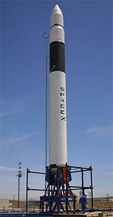

SpaceX, or Space Exploration Technologies Corp., was founded by Elon Musk in 2002 with the overarching goal of advancing space exploration and making humanity a multi-planetary species. The primary purposes and objectives of SpaceX include: 1. Reducing the Cost of Space Access: One of SpaceX's primary goals is to significantly reduce the cost of launching payloads into space. By developing reusable rocket technology, such as the Falcon 9 and Starship, SpaceX aims to make space more accessible and economically viable for a wide range of applications, including scientific research, commercial ventures, and more. 2. Exploring and Colonizing Mars: Elon Musk's vision for SpaceX is to enable human colonization of Mars. He believes that this is critical for the long-term survival of humanity, as it would make humanity a multi-planetary species and reduce the risk of extinction events on Earth. The development of Starship is central to achieving this goal. 3. Commercial Spaceflight: SpaceX is a pioneer in the commercial spaceflight industry. It has worked with both government agencies, such as NASA, and commercial customers to launch satellites, cargo, and astronauts into space. The company's Crew Dragon spacecraft, for example, is used for crewed missions to the International Space Station (ISS) under NASA's Commercial Crew Program. 4. Global Internet Connectivity: SpaceX is deploying the Starlink satellite constellation, which aims to provide global broadband internet coverage, especially in underserved and remote areas. This initiative has the potential to generate significant revenue for SpaceX, further supporting its space exploration ambitions. 5. Lunar Exploration: SpaceX has been selected by NASA to use its Starship as a lunar lander for the Artemis program, which aims to return humans to the Moon. SpaceX's lunar ambitions extend beyond government contracts, with plans for private missions and lunar exploration. 6. Space Tourism: SpaceX has aspirations for space tourism, offering commercial trips to space for private individuals and paying customers. Crewed missions to the ISS and potential orbital space tourism are part of these plans. 7. Satellite Launch Services: SpaceX provides satellite launch services for a wide range of customers, including governments, telecommunications companies, and commercial entities. The Falcon 9 and Falcon Heavy rockets are widely used for these purposes. 8. International Collaboration: SpaceX collaborates with international partners and organizations to foster cooperation in space exploration, satellite deployment, and other space-related activities. 9. Advanced Rocket Development: SpaceX continually works on advancing rocket technology, which has applications beyond the company's immediate goals. The development of technologies like reusable rockets and high-performance engines has broader implications for the aerospace industry. 10. Scientific Research and Exploration: SpaceX launches scientific payloads, telescopes, and other research instruments into space to advance our understanding of the universe and address important scientific questions. In summary, the primary purpose of SpaceX is to drive innovation in space exploration and transportation while making space more accessible, cost-effective, and sustainable. The company's vision encompasses Mars colonization, commercial spaceflight, satellite deployment, lunar exploration, space tourism, and a range of other endeavors aimed at advancing humanity's presence in space.
